Dev Bootcamp Phase 0
Week 7
January 21, 2016
Looping in your code: it can be a beautiful thing and it can be headache inducing. In DBC we've just switched from Ruby to JavaScript. The hardest part of this switch for me has been the change in looping / iterating over objects. You see, ruby has a ton of built-in methods that handle the most challenging aspects of looping for you. JavaScript (at least in its current version) requires a more manual approach to iteration.
Let me show you what I mean:
In Ruby:
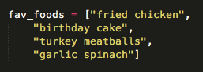Let's say I have the array above and what to access EACH item in the array, I can do that fairly quickly in ruby:
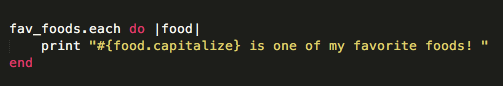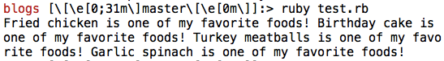
And if I need to access each item WITH INDEX (or position in the array) too? No problem:
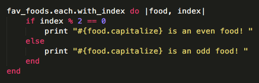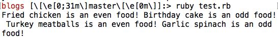
And what if I needed only some of the items in my array? I can SELECT these fairly easily:
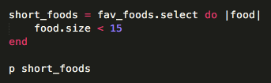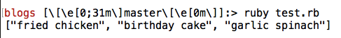
Or MAP new values to each place in the array:
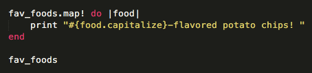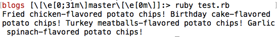
I can also iterate over EACH key and value in hashes (what would be an object in JavaScript):
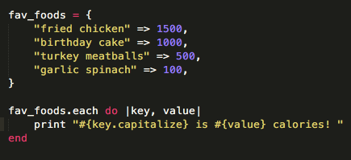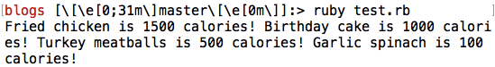
See? Wasn't that simple! Now let's take a look at JavaScript ...
In JavaScript:
In JavaScripts latest version, iterating over objects is not quite so simple. Let's see what it takes to do all the iterations I did in Ruby above:
Our array again:
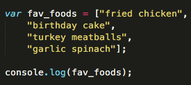Access each item in an array:
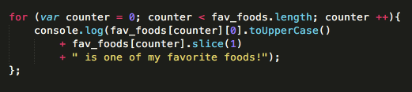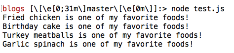
Access each item in an array and its position:
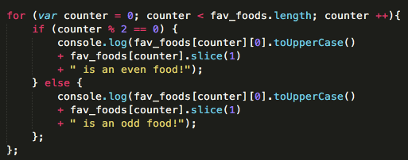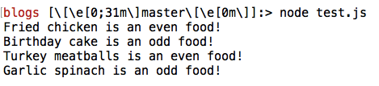
Select only certain items in an array:
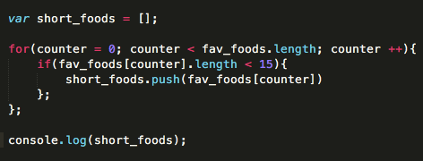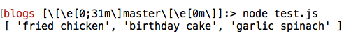
Change items in an array:
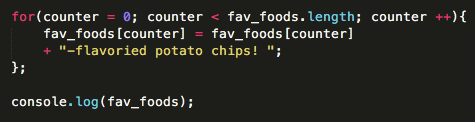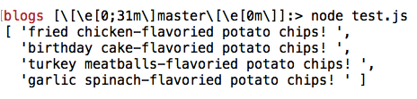
Iterate over an object (hash in Ruby):
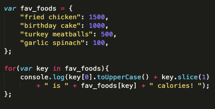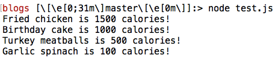
-----------------------------------
You probably already noticed, but most of the above code is more involved and longer for JavaScript. The silver lining with this appears to be that while using JavaScript, you'll have to really be on top of your logic (which can be helpful once you dive deep into more advanced code). Of course the downside (at least for me) is that it is less clean, less DRY, and sometimes (because of how used to Ruby I've become) less intuitive.
One good piece of news is that I hear the next set of JS standards will include a lot more built-in ruby-like functionality. Can't wait for that!